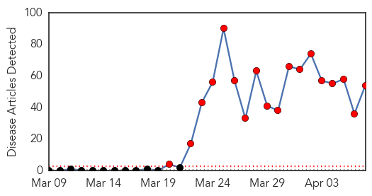
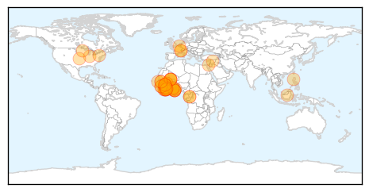

30 Day Trends
Web: 18 alerts, 0 warnings
Twitter: 6 alerts, 0 warnings
Top Articles:
- 1.000
- Scale of Guinea's Ebola epidemic unprecedented -aid agency
- 1.000
- Deadly Ebola virus spreads
- 1.000
- Ebola virus disease, West Africa – update
- 1.000
- Rare case of Lassa fever discovered in Minnesota traveler, CDC says
- 1.000
- Death Toll In Guinea Ebola Outbreak Mounts To 86
- 1.000
- the edge of knowledge
- 1.000
- No Ebola case in Ghana; beware measures will help
- 1.000
- As Ebola spreads in Africa, how worried should West be?
- 1.000
- West Africa mobilises against Ebola epidemic
- 1.000
- Africa battles to keep lid on killer diseases
- 1.000
- West Africa gears up to fight Ebola, killer fevers
- 1.000
- Ebola-hit Guinea calls for calm after attack on aid group
- 0.999
- Mob attacks ebola treatment centre in Guinea
- 0.999
- Mali reports three suspected cases of Ebola
- 0.999
- Mob attacks Ebola treatment centre in Guinea, suspected cases reach Mali
- 0.999
- Mali suspects first Ebola cases as regional death toll tops 90
- 0.999
- No warning on Ebola from Health Ministry – Health director – BorneoPost Online
- 0.999
- Successes, Challenges in Response to Guinea Ebola Epidemic
- 0.999
- Crowd attacks Ebola treatment center Republican American
- 0.999
- Headlines, News, The Philippine Star
- 0.999
- Ebola spread to Guinea capital raises fears
- 0.999
- Guinea: Successes and challenges in response to Ebola outbreak
- 0.999
- Guinea: An MSF epidemiologist explains the dangerous nature of Ebola
- 0.999
- Guinea, Liberia investigate more Ebola cases
- 0.999
- Samaritan's Purse Partners with Liberian Government to Stop Spread of Ebola Virus
- 0.999
- Guinea Ebola patients discharged
- 0.998
- The African Ebola outbreak that keeps getting worse
- 0.998
- First Ebola cases suspected in Mali; regional death toll tops 90
- 0.998
- Ghana Ebola scare: Teenager’s fatal virus tests negative for disease
- 0.998
- Deadly Virus Spreads in Africa to Mali and Ghana
- 0.998
- Successes and challenges in response to Guinea Ebola epidemic - Guinea
- 0.998
- As the deadly Ebola virus disease continues to spread, Red Cross scales up its response - Guinea
- 0.997
- Untitled Article
- 0.997
- Kenya : Mob attacks Ebola treatment centre in Guinea, suspected cases reach Mali
- 0.997
- How to Contain an Epidemic
- 0.996
- Rare West African virus confirmed in Minnesota traveler, search on for others exposed
- 0.996
- UNICEF-Liberia Ebola Outbreak: SitRep #11, 7 April 2014 - Liberia
- 0.995
- Suspected Case Of Ebola Disease Tests Negative
- 0.995
- FG Says Ebola Disease Won’t Enter Nigeria
- 0.994
- Guinea raises Ebola death toll to 95
- 0.994
- Ghana, Business Advice, Jobs, News, Business Directory, Real Estate, Finance, Forms, Auto
- 0.990
- Crowd attacks Ebola treatment center in Guinea
- 0.990
- NEWS.am Medicine - All about health and medicine
- 0.990
- UPDATE 1-Ghana testing blood samples of suspected Ebola case -official
- 0.985
- Ebola Virus: Media Should Not Create Panic
- 0.984
- Sierra Leone: Ebola virus disease preparedness Emergency Plan of Action (EPoA) DREF Operation n° MDRSL005 - Sierra Leone
- 0.984
- UPDATE 1-Fatal virus in Ghana tests negative for Ebola
- 0.975
- Mali eyes suspected cases of Ebola fever
- 0.974
- Ebola Virus Brings Mining to a Halt in West Africa -- The Motley Fool
- 0.968
- Ghana reports first suspected Ebola case
Showing top 50 articles...
Top Tweets:
-
No tweets found for Apr 07, 2014
Web/News Articles
Tweets

Article Locations
Article Confidences